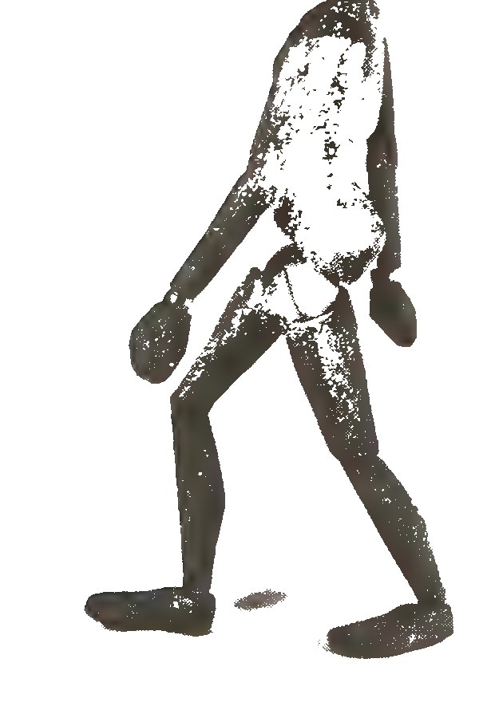
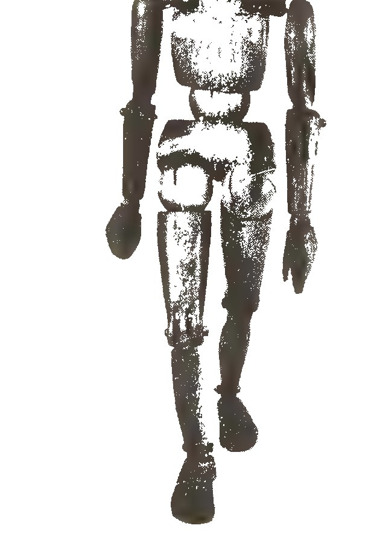

Chương 4 — Harley (60 Tuổi): Càng Hạ Cánh Bị Co Lại
Đi lại với một bước chân êm ái, đều đặn là một trong những chức năng thiết yếu của con người. Chúng ta là những sinh thể hai chân với cách đi lại khác với bất kỳ động vật hai chân nào khác: Mỗi cánh tay đung đưa tự do để cân bằng với cử động của chân bên kia. Có một sự xoắn ở giữa cột sống của chúng ta, tập trung giữa đốt sống sườn thứ bảy và thứ tám, tại đó phần thân trên xoay theo một hướng và phần thân dưới xoay theo hướng kia.

Hình 7a: Đi bộ hai chân bình thường nhìn từ bên

Hình 7b: Đi bộ hai chân bình thường nhìn từ trước
Ít nhất thì đó là điều xảy ra trong cử động hai chân bình thường (xem Hình 7a và 7b), đòi hỏi tư thế phải thẳng đứng để các sự xoay ở trên và dưới được êm ái và đều đặn. Nếu tư thế của cơ thể bị cong hay nghiêng, sự cân bằng êm ái bị phá vỡ hoàn toàn, và người ta phải đi với dáng chậm chạp, ngập ngừng, không đều. Khi điều đó xảy ra, việc đi lại trở nên kém hiệu quả, dễ mệt mỏi và thường đau đớn.
Harley bước vào văn phòng tôi với một cái khập khễnh rõ rệt. Cơ thể anh nghiêng hẳn sang trái, và anh đưa chân trái ra theo một đường cong hướng ra ngoài khi đưa nó về phía trước. Ngoài ra, Harley là một người đàn ông khỏe mạnh, rạng rỡ ở tuổi ngoài sáu mươi, với dáng dấp của một người chăn nuôi trang trại ở California đã sống phần lớn cuộc đời ngoài trời. Khoảng một năm trước đó, anh ngã từ một chiếc xe bán tải và đáp xuống đầu gối trái, vốn đã sưng tấy và bầm tím, khiến anh đi khập khễnh trong vài tuần. Kiểm tra bằng tia X cho thấy, may mắn thay, bao khớp gối không bị tổn thương. Sụn và các gân đã bị va đập và giật mạnh, nhưng vẫn còn nguyên vẹn.
Dù vậy, sau khi cơn đau và sự sưng tấy đã tan đi, Harley thấy mình đi lại với đầu gối trái cong cứng, trọng tâm cơ thể dồn hẳn xuống chân trái. Anh gặp khó khăn ngay cả trong việc đi lại quanh nhà, nhưng điều anh nhớ nhất là được nhảy múa vuông (square dancing) với vợ.
Tôi kiểm tra đầu gối của Harley và thấy nó cử động khá tự do; và khi tôi thao tác với chân anh, nó có thể duỗi thẳng hoàn toàn. Không có vật cản bên trong cũng như không có tiếng kêu rắc rắc, và bao khớp cũng không bị lỏng khi tôi tạo áp lực ngang lên khớp gối. Đó là một đầu gối hoàn toàn khỏe mạnh, chỉ khác là, khi đứng hay đi, Harley không thể duỗi thẳng nó. Tôi đã biết ngay rằng vấn đề của anh là chức năng, chứ không phải cấu trúc.
Khi đứng, Harley nghiêng hẳn sang trái, với cái đầu nghiêng ngược sang phải để bù trừ. Tôi hỏi anh xem các cơ ở bên phải cổ anh có luôn đau nhức không, và anh đáp có. Tất cả các cơ ở bên trái thân mình anh đều căng cứng, đặc biệt là những cơ ở thắt lưng bên trái. Chúng kéo lồng ngực anh sang trái đến mức nó chạm vào xương chậu. Cứ như thể những cơ đó vẫn còn đang co rút để đáp lại cú ngã vào đầu gối. Trên thực tế, chính chuyện đó đang xảy ra: Chấn thương đau đớn của cú ngã đã kích hoạt trong não một sự co cơ phản xạ ở bên trái, và nó đã kéo dài từ lúc ngã cho đến tận nay. Cú sốc vào bên trái cơ thể anh—vào bán cầu não phải của anh—có thể nói là đã bị đóng băng theo thời gian.
Các cơ ở thắt lưng và hông bên trái của Harley co giật đến mức anh không thể cử động hay duỗi thẳng chân một cách bình thường. Xương chậu và đầu gối bên trái của anh

Hình 8: Tư thế của Harley
"đông cứng" trong một tư thế cong, co rút—như bộ hạ cánh của máy bay được thu lại một nửa. Vì công nghệ y khoa chỉ cho phép các bác sĩ tập trung vào bức tranh nhỏ, nên các bác sĩ của anh, khi nhìn vào đầu gối để tìm tổn thương cấu trúc, đã bỏ lỡ bức tranh lớn hơn về điều thực sự đang xảy ra cho toàn bộ bên trái cơ thể anh.
Tôi bắt đầu giúp Harley làm quen lại với các cơ mạnh mẽ ở bên trái cơ thể anh, mà lúc đó anh không cảm nhận được. Trung tâm của chứng quên cảm giác–vận động (SMA) ở anh nằm ở bên trái cơ thể, trong các cơ nối lồng ngực với xương chậu. Trong lúc anh nằm nghiêng trên bàn làm việc của tôi, tôi di chuyển xương chậu giúp anh theo đúng cách nó sẽ cử động nếu chính anh tự làm một cách có ý thức. Khi anh bắt đầu cảm nhận được cử động ở vùng thắt lưng đó, tôi yêu cầu anh thử tự làm lấy—tự nguyện co các cơ thắt lưng vốn đã căng ấy thêm một chút nữa. Hãy xem xét điều này dưới góc nhìn chức năng: Các cơ thắt lưng bên trái của Harley liên tục nhận một tín hiệu từ phần không tự nguyện trong não anh bảo chúng co lại, có thể ở mức 50 phần trăm khả năng của chúng. Tôi yêu cầu anh co chúng ở mức 80 phần trăm trở lên bằng cách gửi một tín hiệu mạnh hơn nữa từ phần tự nguyện của não. Tín hiệu điện hóa từ vỏ não, phần tự nguyện của não, mạnh hơn tín hiệu từ các phần dưới vỏ não, không tự nguyện, trong não anh. Theo thuật ngữ điện hóa, tín hiệu tự nguyện đã "lấn át" tín hiệu không tự nguyện và khẳng định lại quyền kiểm soát của nó đối với các cơ thắt lưng. Bằng cách này, ngay khi Harley nhận ra rằng anh có thể tự nguyện kiểm soát các cơ thắt lưng của mình, một sự kiện kỳ diệu đã xảy ra: Chúng bắt đầu mềm ra và dài ra lần đầu tiên sau một năm rưỡi.
Harley và tôi tiếp tục luyện tập điều này cho đến khi anh làm tốt hơn. Khi anh làm tốt hơn, không chỉ khả năng co và thả lỏng các cơ đó của anh được cải thiện, mà cảm nhận của anh về vùng cơ thể này cũng bắt đầu được cải thiện. Khi hông anh thả lỏng xuống vị trí bình thường, anh đã có thể duỗi thẳng đầu gối khi đi.
"Tôi cảm thấy như bên trái của mình đang thức dậy lại," Harley nói. Thực tế, não anh đang thức dậy; nghĩa là vỏ não, nơi ngự trị các hành động tự nguyện của não, đã bắt đầu lại nắm quyền kiểm soát cơ thể anh. Đó là một sự thật thần kinh học tuyệt đẹp: tăng nhận biết về cơ thể có nghĩa là tăng nhận biết cảm giác về mặt thần kinh, và sự nhận biết cảm giác này về các cơ đi đôi với sự kiểm soát vận động tự nguyện đối với các cơ. Điều này là vì hệ thống cảm giác–vận động là một "vòng phản hồi": nói cách khác, nếu bạn không cảm nhận được nó, bạn không thể cử động nó, và bạn càng cử động được nó, bạn càng cảm nhận được nó. Đó là một quy luật của hệ thống cảm giác–vận động, một bộ phận vững chắc của nền tảng sinh lý thần kinh của giáo dục somatic.
Tôi không muốn điều này có vẻ như tôi chẳng bao giờ dành nhiều hơn ba buổi cho một thân chủ, nhưng hóa ra là Harley và tôi chỉ gặp nhau thêm hai lần nữa và thế là hết. Trong buổi đầu, tôi dạy anh kiểm soát các cơ thắt lưng; trong buổi thứ hai, chúng tôi tập trung vào các cơ hông; và trong buổi thứ ba, chúng tôi tập trung vào việc phối hợp mắt cá chân và đầu gối với các cơ hông và thắt lưng. Cuối buổi thứ ba, Harley không còn khập khễnh chút nào. Anh đi với bước chân êm ái,
đều đặn, thân mình thẳng đứng và hai cánh tay trên đung đưa tự do cân bằng với các cử động phía dưới của hai chân. Harley có thể duỗi thẳng đầu gối hoàn toàn tự do, và chẳng bao lâu anh trở lại với buổi nhảy múa vuông (square dancing) hàng tuần mà anh yêu thích.
Đan Xen: Các Tầng Vô Thức Của Não Bộ
Một trong những đặc điểm nổi bật nhất của chứng quên cảm giác–vận động (SMA) là chúng ta không hề biết gì về sự co cơ trong lúc nó đang diễn ra. Thật là một trải nghiệm giật mình khi phát hiện ra rằng chúng ta đang chủ động làm điều gì đó mà không hề biết.
Mỗi ngày tôi giúp các thân chủ của mình khám phá khía cạnh này của SMA. Ví dụ, khi một thân chủ bị đau vai mạn tính đang nằm trên bàn làm việc có đệm của tôi, tôi nâng cánh tay cô ấy lên không trung và bảo cô thư giãn. Rồi, khi tôi buông tay ra, cánh tay vẫn cứ ở trên không. Tôi gọi sự chú ý của cô đến điều đó: "Nhìn cánh tay của bạn đi. Bạn có thấy gì lạ không?" Cô nhìn và nói là không, cô không thấy gì lạ cả. "Nhưng bạn đang giữ cánh tay bạn trên không đấy!" "Ồ!" cô nói, và buông tay xuống ngay lập tức. "Tôi không hề nhận ra mình đang làm gì." Hoặc một người luôn bị đau cổ sẽ nằm trên bàn, ngửa lưng, trong lúc tôi cố nâng đầu anh ta lên. Tôi không nâng được vì các cơ phía sau cổ đã cứng đơ. Tôi nói với anh: "Thư giãn các cơ ở phía sau cổ để tôi nâng đầu anh lên." Anh tự nguyện thả lỏng chúng, và tôi nâng đầu anh lên rồi đặt xuống. Tôi đợi hai giây rồi thử lại. Đầu không nâng lên được nữa—các cơ phía sau đã co lại, nhưng anh không hề hay biết. Nếu không được nhắc, anh không bao giờ nhận ra điều đó. Suốt cả ngày, ngày nào cũng vậy, anh co chặt các cơ phía sau cổ, hoàn toàn không biết gì về chúng, rồi đến gặp tôi và tự hỏi tại sao cổ anh lại đau liên tục. Những cơ đó mệt mỏi và đau nhức vì phải làm việc liên tục—và anh không hề biết là chính anh đang làm thế.
Các thân chủ của tôi đã được những chuyên gia y tế khác cho biết rằng có một nguyên nhân đơn giản, tiềm ẩn nào đó gây ra cơn đau của họ—một dây thần kinh bị chèn ép, có một gai xương, có viêm bao hoạt dịch, viêm khớp, viêm gân. Trong y học hiện đại, điều đó nghe có vẻ hợp lý, nên việc phẫu thuật quanh hay chỗ dây thần kinh bị chèn ép, hay cạo xương, hay tiêm các loại thuốc khác nhau vào vùng đó cũng có vẻ hợp lý không kém. Tuy nhiên, khi những cách chữa đó không giảm được cơn đau liên tục, bệnh nhân lại được báo rằng họ mắc các bệnh mãn tính và phải học cách sống chung với chúng.
Sự co cơ kéo dài sẽ gây đau nhức hoặc đau. Mọi vận động viên đều biết điều đó, cũng như mọi người lính đã hoàn thành cuộc hành quân 40 dặm đầu tiên của mình. Dù là tự nguyện hay không tự nguyện, sự co cơ kéo dài đều gây đau nhức. Khi SMA xảy ra trong hệ cơ, sự co không tự nguyện được duy trì không chỉ trong một ngày—như trường hợp vận động viên hay người lính—mà là mỗi ngày. Nó có thể tiếp diễn không suy giảm—và không ai để ý—trong vài tuần, vài tháng, vài năm, hoặc suốt cả cuộc đời. Thường thì các cơn co SMA ở lưng dưới xuất hiện ngay từ đầu tuổi hai mươi và tiếp diễn không suy giảm, với cường độ thay đổi, trong suốt phần đời còn lại của một người.
Tôi có thể nói với các thân chủ của mình: "Này, bạn có nhận ra là bạn đang tự làm điều này với chính mình không?"
"Thôi đừng co cơ nữa thì cơn đau sẽ hết!" Tôi có thể nói thế. Tôi có thể nói điều đó suốt cả một năm, hoặc mười năm, nhưng nó chẳng tạo ra chút khác biệt nào, ngoại trừ việc đẩy họ vào tuyệt vọng. Họ không thể cảm nhận sự co cơ của mình qua tai, từ tôi—họ phải cảm nhận nó bên trong chính cơ thể họ.
Tôi đã thảo luận ở phần trước về cách việc cảm nhận và cử động các cơ của chúng ta là một vòng phản hồi, đi từ cơ đến tủy sống và não rồi lại quay về. Vòng lặp này cũng có thể là một đường đi ngắn qua hệ thần kinh, đi từ cơ vào tủy sống rồi lại ra ngoài mà không cần đến các đường thần kinh đi lên não. Đó là đường cảm giác–vận động được dùng khi một bác sĩ gõ nhẹ chiếc búa của mình ngay dưới xương bánh chè của bệnh nhân, gợi ra phản xạ đầu gối. Xung lực cảm giác của cái gõ đi đến một đoạn cụ thể của cột sống và được chuyển ngược lại với một sự co cơ tự động.
Trong SMA, mạch cảm giác–vận động bị lệch khỏi lộ trình thường lệ của nó đi qua các trung tâm kiểm soát tự nguyện của não, rồi vướng vào các phản ứng phản xạ của những đường đi không tự nguyện trong não. Vòng phản hồi cảm giác–vận động vẫn là một—từ cơ đến não rồi đến cơ—nhưng khi các xung thần kinh đi lên cột sống, chúng như bị đoản mạch: nghĩa là, sự phản hồi của các xung cảm giác–vận động diễn ra dưới mức ý thức của các chức năng tự nguyện của não.
Điều này không khó hiểu khi chúng ta tính đến các tầng tiến hóa của não người. Con người không sở hữu một bộ não duy nhất cho bằng sở hữu ba bộ não phối hợp cùng hoạt động. Mỗi tầng tiến hóa từ tầng trước đó, và mỗi lớp lại bổ sung những tinh chỉnh về chức năng mà tầng thấp hơn trước đó còn thiếu. Sự rối loạn trong phối hợp giữa chúng là đặc trưng của SMA.
Paul MacLean mô tả cấu trúc ba lớp này là bộ não ba ngôi (triune brain). Lớp sớm nhất, phát triển ở các loài sên biển và cá nguyên thủy, kiểm soát các chức năng thiết yếu như điều hòa nhịp tim, tuần hoàn máu, hô hấp, di chuyển và sinh sản. Dùng ẩn dụ chiếc xe hơi, MacLean mô tả tầng này như khung gầm thần kinh (neural chassis). Tầng não tiếp theo—theo sự so sánh của MacLean—đã thêm bánh xe vào khung gầm. Tầng trung gian này tinh chỉnh các chức năng thiết yếu của tầng đầu, tổ chức chúng thành sự phối hợp vận động lớn hơn, sự chú ý có tổ chức hơn đối với các hành động tấn công và phòng vệ, và sự quan tâm nhiều hơn đến lãnh thổ cùng thứ bậc xã hội (pecking order, trật tự mổ). Ở mức phát triển đầy đủ, tầng trung gian là nơi chứa đựng một số cảm xúc nhất định: nỗi sợ khiến con vật rút lui, cơn giận huy động con vật tấn công, ham muốn tình dục dẫn con vật đến giao phối. Những chức năng cảm xúc này cho thấy độ nhạy cao hơn đối với các điều kiện xung quanh và việc hành động nào là phản ứng phù hợp. Tầng chức năng não này hiện diện mạnh mẽ trong não người và là nguồn trung tâm của các hành động không tự nguyện, vì thế là vô ý thức. Tầng cao nhất xuất hiện cùng với sự hình thành của vỏ não mới (neocortex), mà MacLean
đã ví như người lái xe tại vô lăng của khung gầm thần kinh. Đây là sự bùng nổ khổng lồ của các tế bào xám ở động vật có vú, tiếp tục phát triển ở các loài linh trưởng, và đạt đến mức phát triển phức tạp nhất ở loài người. Vỏ não mới, một tập hợp khổng lồ các tế bào thần kinh, là nơi ngự trị việc học tập và kiểm soát tự nguyện diễn ra trong phần còn lại của não. Là nguồn của các hành động có ý thức, trung tâm kiểm soát tự nguyện này là một cơ quan khổng lồ của sự thích nghi và học hỏi. Nó chỉ sở hữu những năng lực sơ khai lúc mới sinh, nhưng khi chúng ta trưởng thành, nó dần dần nhưng vững chắc bắt đầu học tất cả những năng lực và cử động phức tạp mà chúng ta gắn liền với việc lớn lên.
Sự trưởng thành là sự phát triển của việc học ở vỏ não ngày càng lớn hơn. Quá trình này có thể tiếp diễn vô hạn, cải thiện và tinh chỉnh các hành động của con người, trừ khi những điều kiện tiêu cực buộc não phải thực hiện các hành động khẩn cấp để tồn tại. Stress kéo dài và những tai nạn chấn thương chính là những điều kiện tiêu cực như vậy, làm lệch vỏ não tự nguyện khỏi sự kiểm soát bình thường của nó đối với hệ thống cảm giác–vận động. Khi điều đó xảy ra, các vùng thấp hơn và nguyên thủy hơn của tầng thứ nhất và thứ hai sẽ nắm quyền kiểm soát. Đó là một sự thoái lui về phản ứng không tự nguyện. Điều đó chính là những gì xảy ra trong chứng quên cảm giác–vận động (SMA).
Sẽ tốt biết bao nếu chúng ta luôn có thể trả lại quyền kiểm soát các cơ của mình cho vỏ não tự nguyện sau những khoảnh khắc căng thẳng! Khi ấy, tiến trình sống sẽ không bị gián đoạn bởi nỗi đau và sự tàn tật đi kèm với SMA. Chúng ta sẽ tiếp tục trưởng thành suốt cuộc đời, thay vì phí sức lực vào việc chống cự và duy trì một cách không tự nguyện những sự co cơ không cần thiết. Chúng ta sẽ tiến gần hơn đến tiềm năng đầy đủ của mình với tư cách con người. Đó là hy vọng của somatic học.